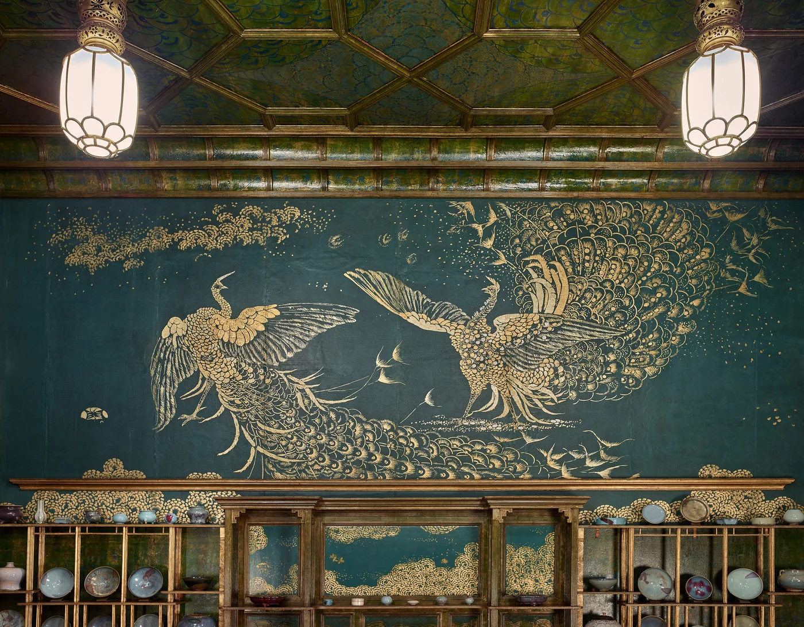
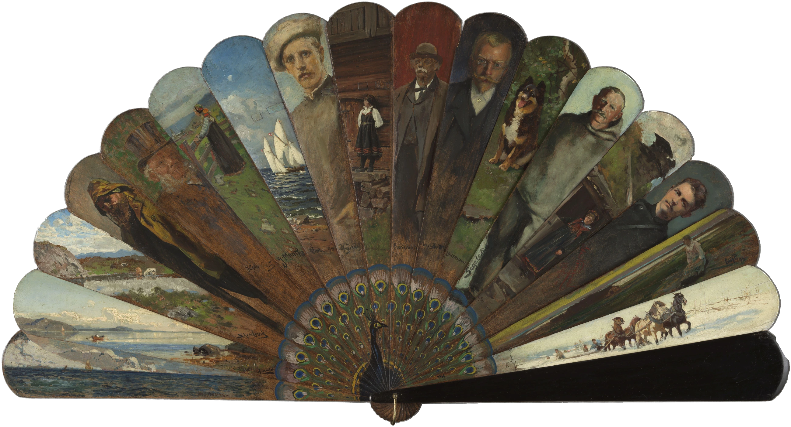
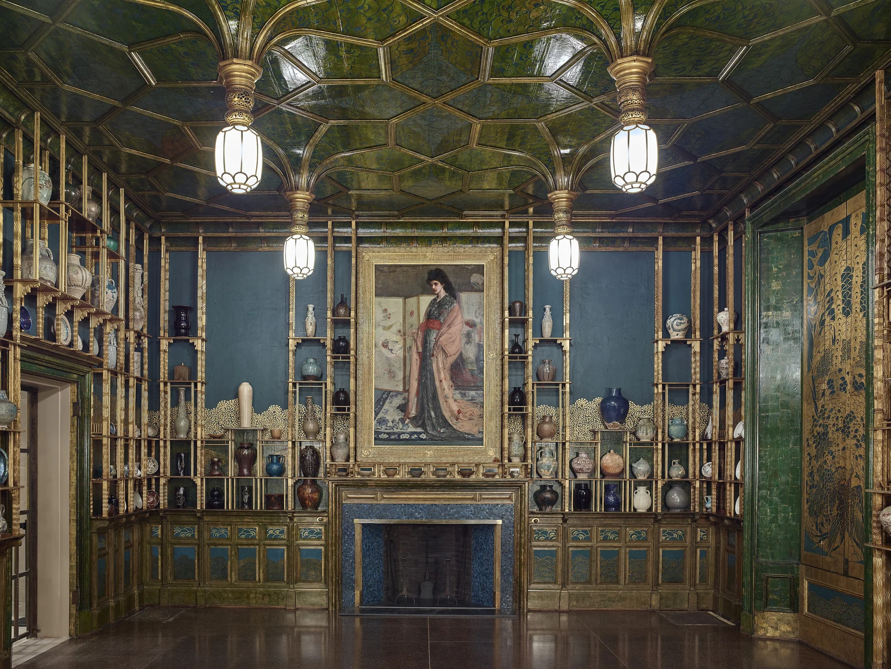
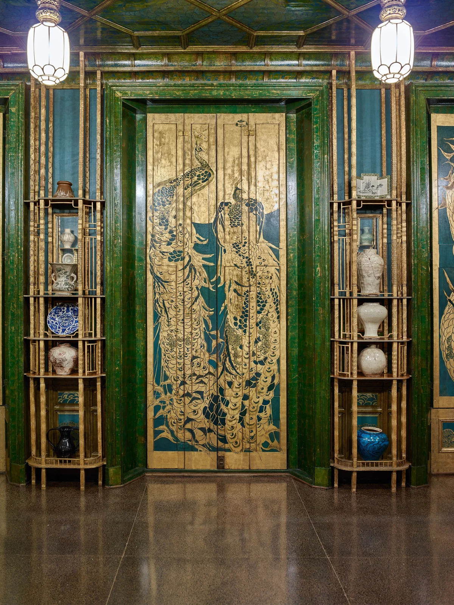

Harmony in Blue and Gold
The Peacock Room, 1876–77


The room was built in London for the shipowner Frederick Leyland, to show his Chinese blue-and-white porcelain on a lattice of walnut shelves. Asked only to touch up its colours, Whistler painted the whole of it, ceiling to shutters, in Prussian blue and gold leaf while Leyland was away.
They quarrelled over the fee. On the last wall Whistler painted two peacocks squaring up, one with silver coins scattered at its feet: Art and Money; or, The Story of the Room. In 1904 Charles Lang Freer bought it whole and carried it across the Atlantic.


A peacock callsDenver Zoo · 0:00 / 0:09
The fan: Kunstnerviften, Kristiania 1898, Nasjonalmuseet · The room: Freer Gallery of Art, Smithsonian